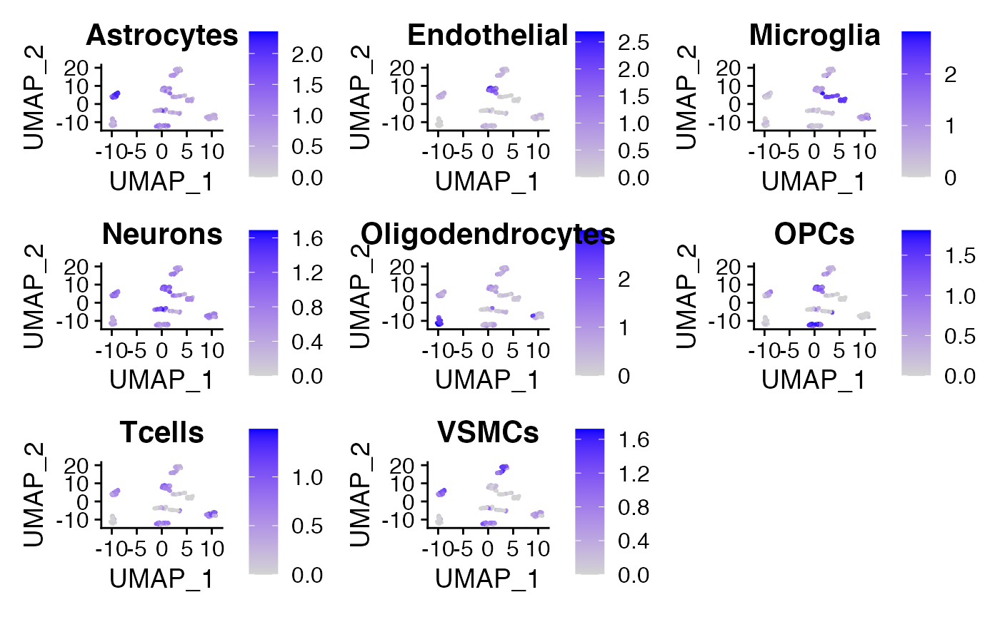

vignette.RmdThe rfca package contains functions that trains a Random Forest Model from single-cell RNA-Seq data, and allows the prediction of cell types and cell states in unlabelled datasets. It also contains a pre-trained Random Forest model, as well as example datasets.
This can be used for automatically labelling cell types for downstream applications and subsetting, looking at proportions of cell subtypes, and finding similarities in cell types, sub cell types, or cell states in different datasets.
Manual cell annotation of scRNAseq datasets, typically based on marker genes, can be time-consuming and biased. Being able to automatically predict cell types/states in a cell-by-cell and cluster-unbiased way is useful for fast and accurate phenotyping.
In addition, despite the increasing amounts of scRNAseq datasets being generated, thorough analysis of these datasets is lagging, and/or done in silos. This package comes with a preloaded Random Forest model based on different datasets and cell types/states, that will be constantly updated.
You can install this package from GitHub with devtools::install_github("kimberleshen/rfca")
createSeuratObjectPipeline() is a function that creates a Seurat object from 10X cell ranger output, specifically the filtered_feature_bc_matrix directory containing the three files: barcodes.tsv.gz, matrix.mtx.gz, features.tsv.gz. It performs several steps in the Seurat pipeline, and returns a Seurat object with a computer pca and umap clusters as Idents (identities). These cluster Idents may be used as labels for training and building the Random Forest model with createRFModel(seuratObject) to identify similar cells in other datasets. Alternatively, Idents (such as cell type) can be manually added and used as labels.
# Create Seurat Object with PCA and UMAP calculated mySeuratObject <- createSeuratObjectPipeline(data.dir = "~/filtered_feature_bc_matrix", nFeature_RNA_lower = 500, nFeature_RNA_upper = 5000, percent.mt = 5, nfeatures = 2000, dims = 20, clusterResolution = 0.8)
This function should be used when there is a well-labelled dataset containing cell types you want to predict. createRFModel() is a function that generates a Random Forest model from a labelled Seurat Object, with each cell as a datapoint, and gene expression levels of the most variable genes (HVGs) as features. The default nfeatures is 200. The Idents (use table(Idents(seuratObject))) of each cell are its labels, and the values that will be predicted when the model is used in predictCells(seuratObject, theRFModel). A low OOB error rate of the Random Forest model (<5%) implies the classified cell types from the input training dataset are well defined and separated.
# Create Random Forest Model with your labelled Seurat Object myRandomForestModel <- createRFModel(exampleSeuratObjectLabelled, nfeatures = 200) #> #> Call: #> randomForest(formula = V1 ~ ., data = merged, importance = TRUE, proximity = TRUE) #> Type of random forest: classification #> Number of trees: 500 #> No. of variables tried at each split: 13 #> #> OOB estimate of error rate: 4.21% #> Confusion matrix: #> Astrocytes Endothelial Microglia Neurons Oligodendrocytes OPCs #> Astrocytes 46 0 0 0 1 0 #> Endothelial 0 54 0 0 0 0 #> Microglia 0 0 47 0 0 0 #> Neurons 1 0 0 46 1 3 #> Oligodendrocytes 0 0 0 1 46 0 #> OPCs 0 0 1 2 1 47 #> Tcells 0 1 1 1 0 0 #> VSMCs 1 0 1 0 0 0 #> Tcells VSMCs class.error #> Astrocytes 0 0 0.02127660 #> Endothelial 0 0 0.00000000 #> Microglia 0 0 0.00000000 #> Neurons 1 0 0.11538462 #> Oligodendrocytes 0 0 0.02127660 #> OPCs 0 0 0.07843137 #> Tcells 49 0 0.05769231 #> VSMCs 0 52 0.03703704
Given a Random Forest model, the markerGeneList() function is used to create lists of marker genes for each of the labels in the model. The dafault number of genes to return is 10. For each label in the Random Forest model, the top 10 most important genes for that label is returned, with the label as the name of that gene list. The returned list of list can be used in the cellMarkerPlots() function to visualize the combined/average expression of a set of genes in a single UMAP plot.
# Create marker gene list from random forest model markerGeneList <- createGeneLists(myRandomForestModel) #> [1] "Adding gene list for Astrocytes" #> [1] "Adding gene list for Endothelial" #> [1] "Adding gene list for Microglia" #> [1] "Adding gene list for Neurons" #> [1] "Adding gene list for Oligodendrocytes" #> [1] "Adding gene list for OPCs" #> [1] "Adding gene list for Tcells" #> [1] "Adding gene list for VSMCs"
The cellMarkerPlots() function takes in a Seurat object and a list of gene list (list of list) and calculates the average expression of each gene list for each cell. A feature plot will be generated for each gene list, titled with the name of the name of the gene list, usually the labels of the Random Forest model if the list of gene list is generated with createGeneList(). Alternatively, the list of gene lists can be generated manually (eg. with your favorite cell type markers) and can be used for quicker annotation of clusters in an unlabelled dataset.
# Visualize Feature Plot based on marker gene list myPlot <- cellMarkerPlots(exampleSeuratObjectLabelled, geneList = markerGeneList) #> [1] "Calculating average expression of genes in Astrocytes list." #> [1] "Calculating average expression of genes in Endothelial list." #> [1] "Calculating average expression of genes in Microglia list." #> [1] "Calculating average expression of genes in Neurons list." #> [1] "Calculating average expression of genes in Oligodendrocytes list." #> [1] "Calculating average expression of genes in OPCs list." #> [1] "Calculating average expression of genes in Tcells list." #> [1] "Calculating average expression of genes in VSMCs list." myPlot

This function takes a Seurat object and predicts the cell type for each cell is in a cluster-unbiased way. It returns the Seurat object with new labels as Idents. The Random Forest model used can be:
predictCells(exampleSeuratObjectUnlabelled, tissueType = mouseImmune))
# Predict cells based on your own Random Forest Model created above autoLabelledSeuratObject <- predictCells(exampleSeuratObjectUnlabelled, myRandomForestModel) #> #> Astrocytes Endothelial Microglia Neurons #> 55 45 58 44 #> Oligodendrocytes OPCs Tcells VSMCs #> 55 49 48 42 # Predict cells based on my pre-loaded and pre-trained Random Forest Model autoLabelledSeuratObject <- predictCells(exampleSeuratObjectUnlabelled) #> #> Astrocytes Endothelial Microglia Neurons #> 53 46 53 48 #> Oligodendrocytes OPCs Tcells VSMCs #> 53 49 48 46 # Visualize autoLabelledSeuratObject DimPlot(autoLabelledSeuratObject)
The example datasets included, exampleSeuratObjectUnlabelled and exampleSeuratObjectLabelled are from mouse brain tissues. They are ~400 cells each and are in the Seurat object format. For exampleSeuratObjectUnlabelled, Idents are cluster numbers. For exampleSeuratObjectLabelled, Idents are cell types.